Fixture offset are used to make a part home that is different from the absolute, machine coordinate system. This allows the part programmer to set up home positions for multiple parts. A typical operation that uses fixture offsets would be to mill multiple copies of parts on "islands" in a piece, similar to the figure below: [gcode/images/offset.jpg]

To use fixture offsets, the values of the desired home positions must be stored in the control, prior to running a program that uses them. Once there are values assigned, a call to G54, for instance, would add 2 to all X values in a program. A call to G58 would add 2 to X values and -2 to Y values in this example.
G53 is used to cancel out fixture offsets. So, calling G53 and then G0 X0 Y0 would send the machine back to the actual coordinates of X=0, Y=0.